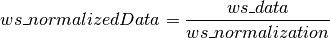

SingleCrystalDiffuseReduction dialog.
Table of Contents
Single Crystal Diffuse Scattering Reduction, normalisation, symmetry and background substraction
| Name | Direction | Type | Default | Description |
|---|---|---|---|---|
| Filename | Input | list of str lists | Mandatory | Files to combine in reduction. Allowed extensions: [‘_event.nxs’, ‘.nxs.h5’, ‘.nxs’] |
| Background | Input | string | Background run. Allowed extensions: [‘_event.nxs’, ‘.nxs.h5’, ‘.nxs’] | |
| BackgroundScale | Input | number | 1 | The background will be scaled by this number before being subtracted. |
| FilterByTofMin | Input | number | Optional | Optional: To exclude events that do not fall within a range of times-of-flight. This is the minimum accepted value in microseconds. Keep blank to load all events. |
| FilterByTofMax | Input | number | Optional | Optional: To exclude events that do not fall within a range of times-of-flight. This is the maximum accepted value in microseconds. Keep blank to load all events. |
| SolidAngle | Input | string | Mandatory | An input workspace containing momentum integrated vanadium (a measureof the solid angle). See MDnormSCD for details. Allowed extensions: [‘.nxs’] |
| Flux | Input | string | Mandatory | An input workspace containing momentum dependent flux. See MDnormSCD for details. Allowed extensions: [‘.nxs’] |
| MomentumMin | Input | number | Optional | Minimum value in momentum. The max of this value and the flux momentum minimum will be used. |
| MomentumMax | Input | number | Optional | Maximum value in momentum. The min of this value and the flux momentum maximum will be used. |
| UBMatrix | Input | string | Mandatory | Path to an ISAW-style UB matrix text file. See LoadIsawUB. Allowed extensions: [‘.mat’, ‘.ub’, ‘.txt’] |
| SetGoniometer | Input | boolean | False | Set which Goniometer to use. See SetGoniometer |
| Goniometers | Input | string | None, Specify Individually | Set the axes and motor names according to goniometers that we define in the code (Universal defined for SNS). Allowed values: [‘None, Specify Individually’, ‘Universal’] |
| Axis0 | Input | string | Axis0: name, x,y,z, 1/-1 (1 for ccw, -1 for cw rotation). A number of degrees can be used instead of name. Leave blank for no axis | |
| Axis1 | Input | string | Axis1: name, x,y,z, 1/-1 (1 for ccw, -1 for cw rotation). A number of degrees can be used instead of name. Leave blank for no axis | |
| Axis2 | Input | string | Axis2: name, x,y,z, 1/-1 (1 for ccw, -1 for cw rotation). A number of degrees can be used instead of name. Leave blank for no axis | |
| LoadInstrument | Input | string | Load a different instrument IDF onto the data from a file. See LoadInstrument. Allowed extensions: [‘.xml’] | |
| DetCal | Input | string | Load an ISAW DetCal calibration onto the data from a file. See LoadIsawDetCal. Allowed extensions: [‘.detcal’] | |
| MaskFile | Input | string | Masking file for masking. Supported file format is XML and ISIS ASCII. See LoadMask. Allowed extensions: [‘.xml’, ‘.msk’] | |
| SymmetryOps | Input | string | If specified the symmetry will be applied, can be space group name or number, or list individual symmetries. | |
| Uproj | Input | dbl list | Defines the first projection vector of the target Q coordinate system in Q3D mode - Default (1,0,0) | |
| Vproj | Input | dbl list | Defines the second projection vector of the target Q coordinate system in Q3D mode - Default (0,1,0). | |
| Wproj | Input | dbl list | Defines the third projection vector of the target Q coordinate system in Q3D mode. - Default (0,0,1) | |
| BinningDim0 | Input | dbl list | -5.05,5.05,101 | Binning parameters for the 0th dimension. Enter it as acomma-separated list of values with theformat: ‘minimum,maximum,number_of_bins’. |
| BinningDim1 | Input | dbl list | -5.05,5.05,101 | Binning parameters for the 1st dimension. Enter it as acomma-separated list of values with theformat: ‘minimum,maximum,number_of_bins’. |
| BinningDim2 | Input | dbl list | -5.05,5.05,101 | Binning parameters for the 2nd dimension. Enter it as acomma-separated list of values with theformat: ‘minimum,maximum,number_of_bins’. |
| KeepTemporaryWorkspaces | Input | boolean | False | If True the normalization and data workspaces in addition to the normalized data will be outputted |
| OutputWorkspace | Output | Workspace | Mandatory | Output Workspace. If background is subtracted _data and _background workspaces will also be made. |
Developed for CORELLI but should work on any instrument. This workflow algorithm loops over a series of runs combining them with correct normalisation, subtract the background and apply symmetry. The resulting workspace is a MDHistoWorkspace containing a volume of scattering.
The input filename follows the syntax from MultipleFileProperty
This workflow makes use of ConvertToMD and MDNormSCD so these should be reviewed to better understand all the options. An example of creating the Solid Angle and Flux workspaces are included in MDNormSCD. MDNormSCDPreprocessIncoherent can be used to process Vanadium data for the Solid Angle and Flux workspaces.
The resulting workspaces can be saved and loaded with SaveMD and LoadMD respectively.
The mask from the solid angle workspace is copied to the data. Additional masking is provided by a masking file. A masking file can be created my masking a data file then saving it using SaveMask.
The background is processed the same as the data except that the Goniometer is copied from the data before setting the UB matrix. If a background is included three workspaces are create. If “OutputWorkspace” is set to “ws” you will get the following.
“ws_normalizedBackground” containing the normalised background.
“ws_normalizedData” containing the normalised data.
And “ws” where

Should the background scale not be correct this allows you to redo the background subtraction without rerunning the reduction.
If no background is used then the “ws” is just the normalised data.
The symmetry is applied by manipulating the UB matrix. The SymmetryOps parameters can either be defined as a space group (number or name) were all the symmetries for that group is applied, or you can specify individual symmetries to apply.
For example setting SymmetryOps to “P 31 2 1”, “152” or “x,y,z; -y,x-y,z+1/3; -x+y,-x,z+2/3; y,x,-z; x-y,-y,-z+2/3; -x,-x+y,-z+1/3” are equivalent.
If the KeepTemporaryWorkspaces option is True the data and the normalization in addition to the nomalized data will be outputted. This allows you to run separate instances of SingleCrystalDiffuseReduction and combine the results. They will have names “ws_data” and “ws_normalization” respectively.
Where

If background is subtracted there will be similar “ws_background_data” and “ws_background_normalization” for the background.
Where

Single file
SingleCrystalDiffuseReduction(Filename='CORELLI_29782',
SolidAngle='/SNS/CORELLI/shared/Vanadium/2016B/SolidAngle20160720NoCC.nxs',
Flux='/SNS/CORELLI/shared/Vanadium/2016B/Spectrum20160720NoCC.nxs',
UBMatrix="/SNS/CORELLI/IPTS-15526/shared/benzil_Hexagonal.mat",
OutputWorkspace='output',
SetGoniometer=True,
Axis0="BL9:Mot:Sample:Axis1,0,1,0,1",
BinningDim0='-10.05,10.05,201',
BinningDim1='-10.05,10.05,201',
BinningDim2='-0.1,0.1,1')

Multiple files
SingleCrystalDiffuseReduction(Filename='CORELLI_29782:29817:10',
SolidAngle='/SNS/CORELLI/shared/Vanadium/2016B/SolidAngle20160720NoCC.nxs',
Flux='/SNS/CORELLI/shared/Vanadium/2016B/Spectrum20160720NoCC.nxs',
UBMatrix="/SNS/CORELLI/IPTS-15526/shared/benzil_Hexagonal.mat",
OutputWorkspace='output',
SetGoniometer=True,
Axis0="BL9:Mot:Sample:Axis1,0,1,0,1",
BinningDim0='-10.05,10.05,201',
BinningDim1='-10.05,10.05,201',
BinningDim2='-0.1,0.1,1')

Single file with symmetry
SingleCrystalDiffuseReduction(Filename='CORELLI_29782',
SolidAngle='/SNS/CORELLI/shared/Vanadium/2016B/SolidAngle20160720NoCC.nxs',
Flux='/SNS/CORELLI/shared/Vanadium/2016B/Spectrum20160720NoCC.nxs',
UBMatrix="/SNS/CORELLI/IPTS-15526/shared/benzil_Hexagonal.mat",
OutputWorkspace='output',
SetGoniometer=True,
Axis0="BL9:Mot:Sample:Axis1,0,1,0,1",
BinningDim0='-10.05,10.05,201',
BinningDim1='-10.05,10.05,201',
BinningDim2='-0.1,0.1,1',
SymmetryOps="P 31 2 1")

Multiple files with symmetry
SingleCrystalDiffuseReduction(Filename='CORELLI_29782:29817:10',
SolidAngle='/SNS/CORELLI/shared/Vanadium/2016B/SolidAngle20160720NoCC.nxs',
Flux='/SNS/CORELLI/shared/Vanadium/2016B/Spectrum20160720NoCC.nxs',
UBMatrix="/SNS/CORELLI/IPTS-15526/shared/benzil_Hexagonal.mat",
OutputWorkspace='output',
SetGoniometer=True,
Axis0="BL9:Mot:Sample:Axis1,0,1,0,1",
BinningDim0='-10.05,10.05,201',
BinningDim1='-10.05,10.05,201',
BinningDim2='-0.1,0.1,1',
SymmetryOps="P 31 2 1")

Multiple files with symmetry and background substraction
SingleCrystalDiffuseReduction(Filename='CORELLI_29782:29817:10',
Background='CORELLI_28124',
BackgroundScale=0.95,
SolidAngle='/SNS/CORELLI/shared/Vanadium/2016B/SolidAngle20160720NoCC.nxs',
Flux='/SNS/CORELLI/shared/Vanadium/2016B/Spectrum20160720NoCC.nxs',
UBMatrix="/SNS/CORELLI/IPTS-15526/shared/benzil_Hexagonal.mat",
OutputWorkspace='output',
SetGoniometer=True,
Axis0="BL9:Mot:Sample:Axis1,0,1,0,1",
BinningDim0='-10.05,10.05,201',
BinningDim1='-10.05,10.05,201',
BinningDim2='-0.1,0.1,1',
SymmetryOps="P 31 2 1")

Reading in elastic Corelli autoreduced data
SingleCrystalDiffuseReduction(Filename=','.join('/SNS/CORELLI/IPTS-15526/shared/autoreduce/CORELLI_'+str(run)+'_elastic.nxs' for run in range(29782,29818,10)),
Background='/SNS/CORELLI/IPTS-15796/shared/autoreduce/CORELLI_28124_elastic.nxs',
BackgroundScale=0.95,
SolidAngle='/SNS/CORELLI/shared/Vanadium/2016B/SolidAngle20160720NoCC.nxs',
Flux='/SNS/CORELLI/shared/Vanadium/2016B/Spectrum20160720NoCC.nxs',
UBMatrix="/SNS/CORELLI/IPTS-15526/shared/benzil_Hexagonal.mat",
OutputWorkspace='output',
SetGoniometer=True,
Axis0="BL9:Mot:Sample:Axis1,0,1,0,1",
BinningDim0='-10.05,10.05,201',
BinningDim1='-10.05,10.05,201',
BinningDim2='-0.1,0.1,1',
SymmetryOps="P 31 2 1")

Defining the axis to be [H,H,0], [H,-H,0], [0,0,L]
SingleCrystalDiffuseReduction(Filename='CORELLI_29782:29817:10',
Background='CORELLI_28124',
BackgroundScale=0.95,
SolidAngle='/SNS/CORELLI/shared/Vanadium/2016B/SolidAngle20160720NoCC.nxs',
Flux='/SNS/CORELLI/shared/Vanadium/2016B/Spectrum20160720NoCC.nxs',
UBMatrix="/SNS/CORELLI/IPTS-15526/shared/benzil_Hexagonal.mat",
OutputWorkspace='output',
SetGoniometer=True,
Axis0="BL9:Mot:Sample:Axis1,0,1,0,1",
Uproj='1,1,0',
Vproj='1,-1,0',
Wproj='0,0,1',
BinningDim0='-7.5375,7.5375,201',
BinningDim1='-13.165625,13.165625,201',
BinningDim2='-0.1,0.1,1',
SymmetryOps="P 31 2 1")

Python: SingleCrystalDiffuseReduction.py (last modified: 2018-04-09)